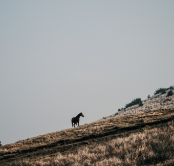
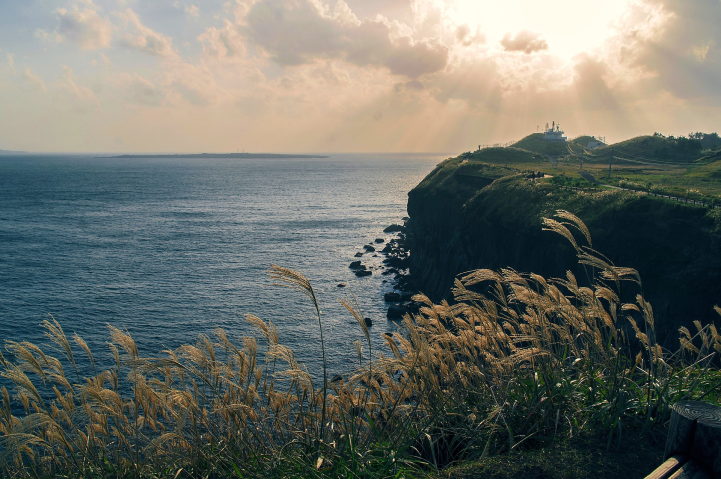
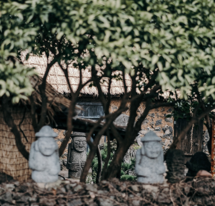

ContentArea
Jeju Stroy
There is a saying that 'it looks as much as you know.' I think that Jeju is a place to travel lightly but I am not interested in the history of each area and the hidden story of the area.
- 
- 
- 
Samdado was given its name because of its abundance of wind, rocks and women
There is a saying that 'it looks as much as you know.' I think that Jeju is a place to travel lightly but I am not interested in the history of each area and the hidden story of the area.
Jeju History
-
- Thousand Years of History, Tamna
- Tamna, Jeju’s former name, means ‘Island Country’. The process of establishment of Tamna on Jejudo Island can be seen in the Tamna Birth Myth, which is known as the ‘Samseong Myth’. If you would like to see archaeological traces, then you can visit the ‘Archaeological Site in Samyang-dong, Jeju’. Registered as Historic Site 416, the Archaeological Site in Samyang-dong, Jeju is a large-scale village site that was first formed around 300 BC, during the original Three Kingdoms of Korea. It portrays the society that existed in the time of Tamna Creation Myth (200 BC to 200 AD).
-
- ‘Tamna’ Changes
into ‘Jeju’ - It was on the 10th year of King Sukjong (1105) of Goryeo that the ancient sea nation Tamna lost its status as an independent nation. During the reign of King Gojong (1213-1259) of Goryeo, Tamna was renamed Jeju, which meant ‘a large village across the ocean’.
- ‘Tamna’ Changes
-
- You Must Know
About 4 ∙ 3 - If you do not know about its painful history, then your tour can only be half-sided. It is recommended that you visit the Jeju 4 ∙ 3 Peace Park, which is now being used as an educational platform for peace and human rights as well as a reminder to reflect upon the events of Jeju’s 4 ∙ 3.
- You Must Know